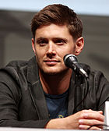
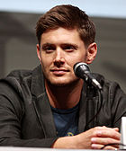

Supernatural (série de televisão)
Supernatural é uma série de televisão de fantasia sombria criada por Eric Kripke. Produzida pela Warner Bros. Television e Wonderland Sound and Vision, estreou em 13 de setembro de 2005 na The WB e, posteriormente, na The CW, terminando em 19 de novembro de 2020. A série acompanha os irmãos Sam e Dean Winchester, interpretados por Jared Padalecki e Jensen Ackles, enquanto caçam criaturas sobrenaturais.
Kripke desenvolveu Supernatural por quase dez anos. Inicialmente, a história envolvia jornalistas investigando eventos sobrenaturais, mas foi reformulada após a WB rejeitar a ideia original. Os produtores executivos são Kripke, McG e Robert Singer.
Filmada em Vancouver, no Canadá, o piloto atraiu mais de 5,69 milhões de telespectadores, levando a WB a encomendar uma temporada completa de 22 episódios. Kripke planejou inicialmente três temporadas, depois expandiu para cinco. A quinta temporada, que começou em 10 de setembro de 2009, concluiu o arco principal, mas a série continuou devido ao aumento da audiência, terminando na décima quinta temporada com 20 episódios.
No Brasil, a série foi exibida pelo SBT de 2006 a 2018 e é reexibida pelo Warner Channel. Supernatural é a série mais longa da The CW e a última das extintas WB e UPN a ser transmitida pela CW.
Temporadas
A série segue os irmãos Sam Winchester e Dean Winchester que viajam por toda a América em um Chevrolet Impala 1967 preto investigando e combatendo eventos paranormais e outras ocorrências inexplicáveis, muitas delas baseadas em lendas urbanas americanas e folclore, assim como diferentes criaturas sobrenaturais.
| Temporada | Episódios | Originalmente exibido | ||||
|---|---|---|---|---|---|---|
| Estreia da temporada | Final da temporada | |||||
| 1 | 22 | 13 de setembro de 2005 | 4 de maio de 2006 | |||
| 2 | 22 | 28 de setembro de 2006 | 17 de maio de 2007 | |||
| 3 | 16 | 4 de outubro de 2007 | 15 de maio de 2008 | |||
| 4 | 22 | 18 de setembro de 2008 | 14 de maio de 2009 | |||
| 5 | 22 | 10 de setembro de 2009 | 13 de maio de 2010 | |||
| 6 | 22 | 24 de setembro de 2010 | 20 de maio de 2011 | |||
| 7 | 23 | 23 de setembro de 2011 | 18 de maio de 2012 | |||
| 8 | 23 | 3 de outubro de 2012 | 15 de maio de 2013 | |||
| 9 | 23 | 8 de outubro de 2013 | 20 de maio de 2014 | |||
| 10 | 23 | 7 de outubro de 2014 | 20 de maio de 2015 | |||
| 11 | 23 | 7 de outubro de 2015 | 25 de maio de 2016 | |||
| 12 | 23 | 13 de outubro de 2016 | 18 de maio de 2017 | |||
| 13 | 23 | 12 de outubro de 2017 | 17 de maio de 2018 | |||
| 14 | 20 | 11 de outubro de 2018 | 25 de abril de 2019 | |||
| 15 | 20 | 10 de outubro de 2019 | 19 de novembro de 2020 | |||
Produção
Eric Kripke desenvolveu Supernatural por quase dez anos, inspirado por lendas urbanas desde a infância. Inicialmente concebida como um filme, a série passou por várias fases, incluindo uma antologia paranormal e um grupo de jornalistas viajantes, antes de se transformar na história de dois irmãos caçadores de demônios.
Kripke apresentou a ideia ao canal WB após trabalhar em Tarzan. Os protagonistas, originalmente chamados "Sal" e "Dean" em homenagem a On the Road, tiveram seus nomes alterados para "Sam" e "Dean" por questões legais. O Impala de 67 foi escolhido como o carro dos irmãos, substituindo a ideia inicial de um Mustang de 65.

Peter Johnson, da Wonderland Sound and Vision, contratou Kripke e se envolveu como coprodutor executivo, junto com McG. Antes do piloto ser filmado, o roteiro foi revisado para simplificar o passado dos personagens: os irmãos foram criados pelo pai, não por tios. A morte de Jessica, namorada de Sam, foi adicionada como motivação para ele se juntar a Dean.
Com o diretor David Nutter a bordo, o piloto foi aprovado. Robert Singer e John Shiban foram contratados para ajudar na produção e desenvolvimento da mitologia da série, planejada inicialmente para três temporadas, mas expandida para cinco.
Protagonistas
Para interpretar os dois personagens protagonistas de Supernatural, os irmãos Sam e Dean Winchester, a escolha deu-se aos atores Jared Padalecki e Jensen Ackles, respectivamente. Kripke queria o mais semelhante o possível a Luke Skywalker e Han Solo de Star Wars.
Padalecki conhecia os produtores executivos McG e David Nutter, os primeiros a convencê-lo para fazer um teste para o papel de Sam. O ator tornou-se interessado no papel graças ao seu gosto por séries de terror, como The X-Files e Twilight Zone, que ele achou semelhante a Supernatural. Ele também estava animado para interpretar "o herói relutante", comparando Sam a personagens como Neo de Matrix e Luke Skywalker de Star Wars.
Ackles foi originalmente convidado por Nutter para fazer um teste para o papel de Sam, mas o ator preferiu o personagem de Dean após ler o roteiro.
 

Escrita
A equipe da primeira temporada de Supernatural consistiu de Eric Kripke e outros cinco roteiristas, que ajudaram na pesquisa de lendas urbanas. A série foi influenciada por filmes como Poltergeist, Evil Dead II e Um Lobisomem Americano em Londres, combinando elementos de terror e comédia. Kripke também se inspirou em filmes asiáticos de terror e, a partir da quarta temporada, no poema épico Paraíso Perdido, de John Milton, para introduzir a mitologia cristã na trama.
Inicialmente, Kripke não queria anjos na série, mas a necessidade de uma "batalha cósmica" mudou sua perspectiva, permitindo grandes histórias com poucos personagens centrais, semelhante a Star Wars e O Senhor dos Anéis. O foco original de Supernatural era nos "monstros da semana", mas a química entre Jared Padalecki e Jensen Ackles levou a série a concentrar-se mais na relação dos irmãos Winchester.
Kripke preferiu uma mitologia simples, semelhante ao formato dos primeiros episódios de The X-Files, com episódios autônomos intercalados com episódios de mitologia, permitindo que novos espectadores acompanhassem a série facilmente.
Música
A trilha sonora de Supernatural combina incisão orquestral e rock clássico, com dois compositores, Christopher Lennertz e Jay Gruska, criando temas específicos para episódios e personagens. Canções originais são usadas em todos os episódios, mas o rock clássico é essencial, apesar dos altos custos de direitos autorais. Eric Kripke, o criador, usa músicas de sua coleção pessoal, evitando bandas caras como Led Zeppelin e optando por Blue Öyster Cult e AC/DC. Lennertz e Gruska frequentemente compõem pequenos trechos de rock para economizar nos direitos autorais. A música "Carry On Wayward Son", do Kansas, é tradicionalmente tocada no final de cada temporada.
Local das filmagens
Embora o episódio piloto de Supernatural tenha sido filmado em Los Angeles, a produção principal ocorre em Vancouver, na Colúmbia Britânica. Locais na área são frequentemente reutilizados com alterações do departamento de arte para disfarçar a repetição. Exemplos incluem o lago Buntzen para "Dead in the Water", a barragem Cleveland para "Simon Said", o parque Heritage em Burnaby como cemitério em "Red Sky at Morning" e a casa de pão de gengibre em Riverview em Coquitlam aparece como asilo em "Asylum", hospital em "Bedtime Stories". O hospital em "My Time of Dying" e prisão em "Folsom Prison Blues". Muitas filmagens ocorrem em uma antiga base militar fechada, utilizada para cenas em encruzilhadas e outras.
Audiência
Após os quatro primeiros episódios de Supernatural exibidos em 2005, a WB encomendou uma temporada completa de 22 episódios. A série teve sucesso inicial com homens de 18-34 e 12-34 anos, mantendo 91% dos telespectadores de Gilmore Girls. Na segunda temporada, as avaliações caíram, com um público principalmente de adolescentes femininas, e a CW tentou atrair mais homens. Apesar das avaliações medíocres, a série retornou para uma terceira temporada, que teve bons resultados com espectadores de 18-49 anos. A série foi renovada para uma quarta temporada, cuja estreia teve a maior audiência desde a estreia na CW, com 3,96 milhões de telespectadores. Embora algumas audiências caíssem, a série recuperou, atingindo seu melhor desempenho em adultos de 18-34, adultos de 18-49 e, com dados do DVR, a audiência total aumentou 38%, com adultos de 18-34 aumentando em 47%.
Prêmios
Supernatural foi nomeada e premiada diversas vezes ao longo dos anos. A argumentista Raelle Tucker recebeu o Constellation Award em 2007 pelo episódio "What Is and What Should Never Be". O episódio piloto foi nomeado para dois Emmy em 2006 e para um Golden Reel Award. A série foi nomeada para Saturn Awards em 2006, 2008 e 2009, além de várias nomeações nos Teen Choice Awards e People's Choice Awards, vencendo o último em 2010.
O elenco não regular também recebeu várias nomeações. Colby Paul e Nicholas Elia foram nomeados para Young Artist Awards, enquanto Jessica Harmon e Mandy Playdon foram nomeadas para Leo Awards. Em 2010, Jensen Ackles, Misha Collins e Alona Tal foram nomeados para Constellation Awards, e a série venceu a capa da revista TV Guide. Em 2012, Supernatural ganhou duas categorias no People's Choice Awards e, em 2015, Misha Collins e Jensen Ackles ganharam o Teen Choice Award para Melhor Química da televisão.
Fã-clube
Supernatural desenvolveu uma base de fãs dedicada, ativa tanto online quanto em convenções. Os fãs participam ativamente em redes sociais, fóruns e escrevem fanfics sobre a série. Convenções de fãs começaram em 2006 em Nashville e expandiram para várias cidades ao redor do mundo. As estrelas da série frequentemente participam desses eventos. Antes da estreia da quinta temporada, os fãs tentaram promover o show no Twitter com hashtags como "#LuciferIsComing", mas houve controvérsias e bloqueios de tendências devido a respostas inesperadas, incluindo a hashtag "#GodIsHere".
Informação da Série
| Supernatural | |
|---|---|
| Sobrenatural (PT/BR) | |
|
|
|
| Informação geral | |
| Formato | série |
| Gênero |
Terror Fantasia Ação Aventura Mistério Drama |
| Duração | 38-45 minutos |
| Estado | Finalizada |
| Criador(es) | Eric Kripke |
| Elenco |
Jared Padalecki Jensen Ackles Katie Cassidy Lauren Cohan Misha Collins Mark A. Sheppard Mark Pellegrino Alexander Calvert |
| País de origem | Estados Unidos |
| Idioma original | inglês |
| Temporadas | 15 |
| Episódios | 327 |
| Produção | |
| Produtor(es) executivo(s) |
McG David Nutter Kim Manners John Shiban Phil Sgriccia Sera Gamble Ben Edlund Jeremy Carver Jim Michaels Todd Aronauer Adam Glass Andrew Dabb Brad Buckner Eugenie Ross-Leming |
| Câmera | Câmera única |
| Tema de abertura | This is Supernatural |
| Composto por |
Jay Gruska Christopher Lennertz |
| Tema de encerramento | Offenbach |
| Empresa(s) produtora(s) |
Kripke Enterprises Wonderland Sound and Vision (2005-2020) Warner Bros. Television |
| Localização | Colúmbia Britânica, Canadá |
| Exibição | |
| Emissora original |
The WB (2005-2006) The CW (2006-2020) |
| Distribuição | Warner Bros. Television Distribution |
| Formato de exibição | 1080i HDTV |
| Formato de áudio | Dolby Digital 5.1 |
| Transmissão original | 13 de setembro de 2005 19 de novembro de 2020 |
| Cronologia | |
| Programas relacionados | Supernatural: Bloodlines |